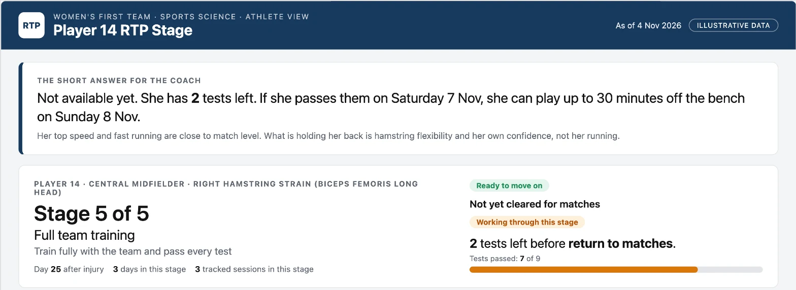
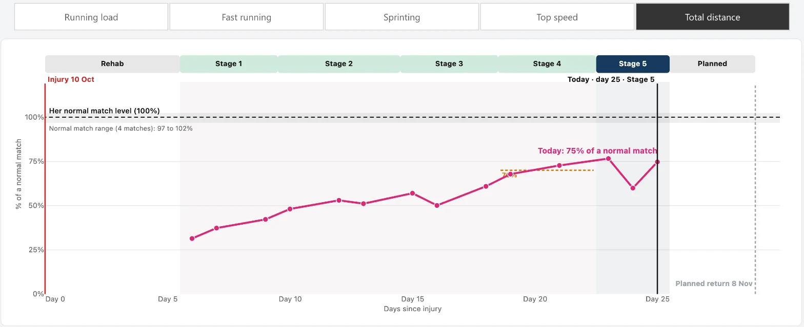
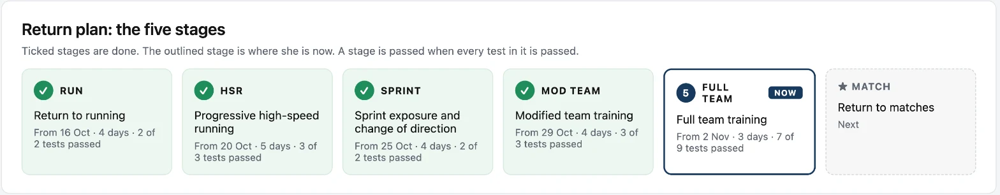
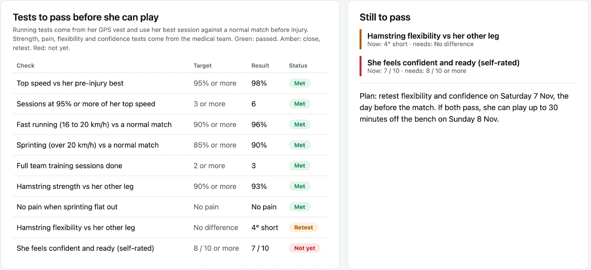
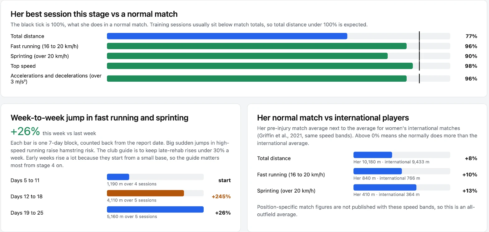

One answer for the coach.
A Power BI report that tracks a player back from a hamstring strain. It opens with the answer a coach actually needs: can she play, and if not, what's left.
- Built in
- Power BI
- For
- Coaches, medics and S&C staff
- Data
- GPS plus medical tests. Illustrative values
- When
- November 2026

Coaches want a yes or no.
Return-to-play data is spread across GPS, strength tests and medical notes. A coach doesn't have time to read all of it.
As an athlete and a sports scientist, I know both sides need the same thing: a clear answer and a clear next step.
Every session, against a normal match.
Each dot is one training session, shown as a percentage of her normal match before injury. The coloured strip shows which stage she was in. Coaches can switch between running load, fast running, sprinting, top speed and total distance.

Five stages. Clear tests.
She only moves up a stage when she passes every test in it. Running tests come from her GPS vest. Strength, pain, flexibility and confidence come from the medical team.


Ready, but not too fast.
Big jumps in high-speed running raise hamstring risk, so the report tracks the week-to-week rise against a 30% guide. It also compares her normal match against published women's international averages (Griffin et al., 2021).

Built to be read fast.
- Plain English labels, like "fast running (16 to 20 km/h)", with a key for every term.
- One colour rule: green passed, amber close, red not yet.
- Test types follow an expert agreement on hamstring return to play (Zambaldi et al., 2017). Pass marks are club practice.
All player values are illustrative. No real player data is shown.